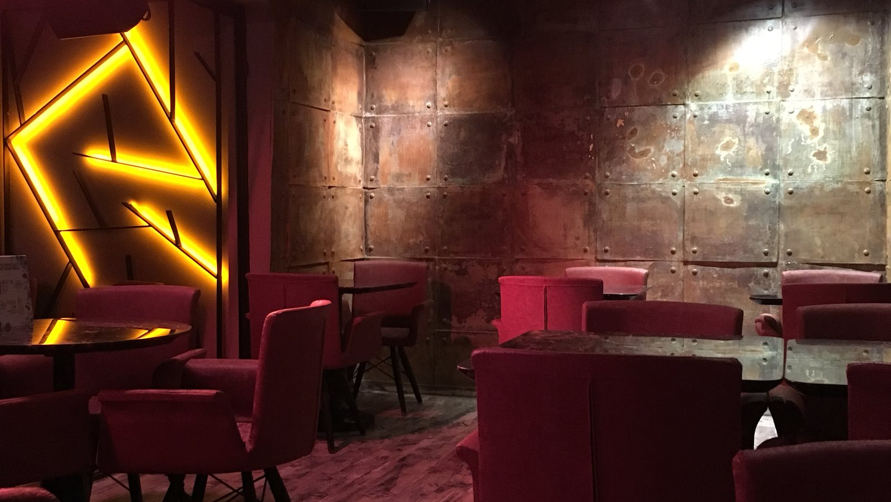
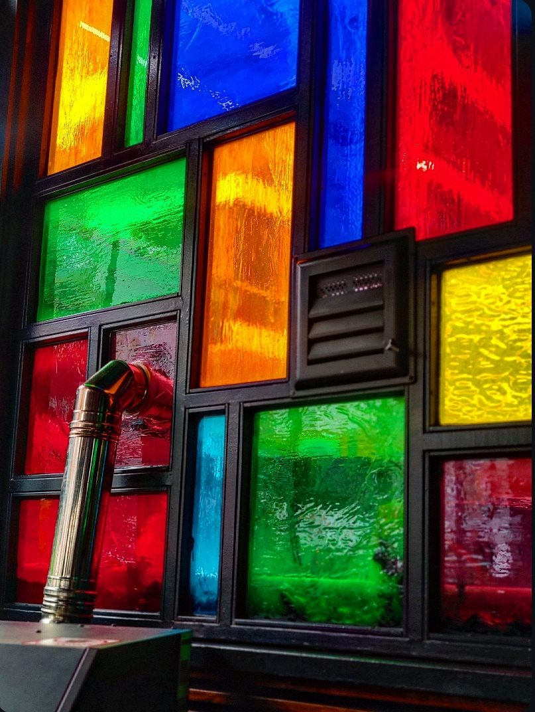
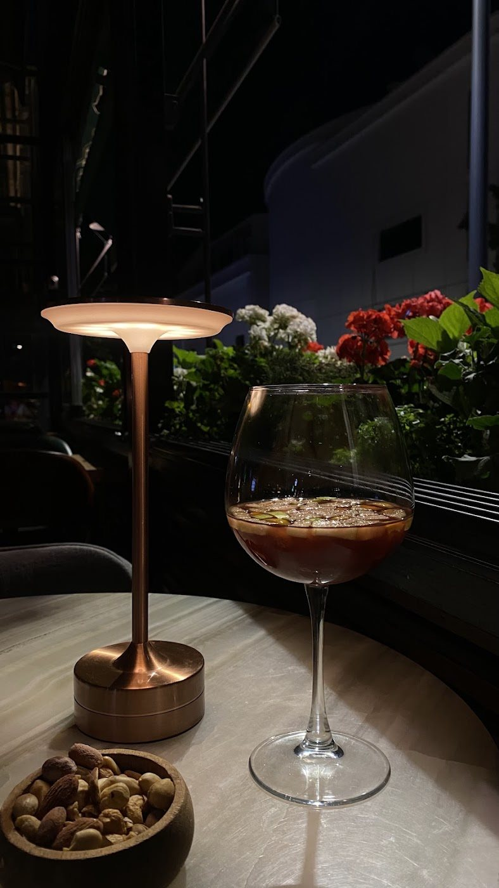

Serpme Kahvaltı
İki kişilik; yöresel peynirler, börekler, bal ve kaymak, tahin ve pekmez, zeytin ve sınırsız çay.

Avcılar’ın merkezinde
Kahvaltıdan akşam yemeğine, kahveden kokteyle.
Sohbet uzasın, keyfiniz yerinde olsun.
Kısa bir öğle molası da olur, arkadaşlarla uzun bir akşam da. Günün farklı saatleri için mutfağımızdan birkaç kare.
Kahve molasından akşam masasına
Avcılar’da buluşma yeriniz belli. Bir kahve için uğrayın ya da akşamı birlikte karşılayalım.
Arkadaşlarınızla uzun bir sohbet, gün ortasında kısa bir mola. Fabbrica’da günün temposuna birlikte ara verelim.
İletişime geçin

Google yorumları
İş arkadaşlarımızla yemeğe geldik, kokteylleri kesinlikle tavsiye ederim. Yemekler lezzetliydi fakat özellikle pizzayı tavsiye ederim.
Öncelikle çalışanların ilgi ve alakası için teşekkür ediyoruz. Hızlı çalışan güzel yüzlü insanlar. Mekân sahipleri de oldukça kibar.
Mekân güzel ve yiyecekleri çok lezzetli. İçki içmesen bile oturup keyifli bir zaman geçirilebilir.
Bir masa, birkaç arkadaş.
Ziyaretinizle ilgili sorularınız ve güncel menü bilgisi için bizi arayabilirsiniz.
Restoranı arayınGüncel çalışma saatleri ve kalabalık gruplarla ziyaret hakkında bilgi almak için işletmeyle telefon üzerinden iletişime geçebilirsiniz.